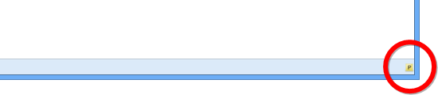

WebMatrix 2：RESTful？な Web アプリケーション （4）
執筆日時：
WebMatrix 2：RESTful？な Web アプリケーション （3） - だるろぐ の続き。サーバーへ手軽に PUT/DELETE できる方法はないかなぁ、と思って探していたのだけど、
という Firefox 拡張機能が簡単でよかった。ただ、最近はあんまりメンテナンスされていないようで

わざわざアドオンバーを表示して、このクソちっちゃいボタンをポチッとしなきゃいけないのだけど。
それはともかく。

IIS（Express）は標準で PUT や DELETE を認識してくれないみたいで、リクエストを投げても 404 が返ってきてしまう。Web.config を書き換えて、PUT や DELETE をハンドリングできるようにする必要があるみたい。
<?xml version="1.0" encoding="utf-8"?><configuration> <system.web> <compilation debug="true" targetFramework="4.0" /> </system.web>
<system.webServer> <handlers> <remove name="WebDAV" /> <remove name="ExtensionlessUrlHandler-ISAPI-4.0_32bit" /> <remove name="ExtensionlessUrlHandler-ISAPI-4.0_64bit" /> <remove name="ExtensionlessUrlHandler-Integrated-4.0" /> <add name="ExtensionlessUrlHandler-ISAPI-4.0_32bit" path="." verb="GET,HEAD,POST,DEBUG,PUT,DELETE,PATCH,OPTIONS" modules="IsapiModule" scriptProcessor="%windir%\Microsoft.NET\Framework\v4.0.30319\aspnet_isapi.dll" preCondition="classicMode,runtimeVersionv4.0,bitness32" responseBufferLimit="0" /> <add name="ExtensionlessUrlHandler-ISAPI-4.0_64bit" path="." verb="GET,HEAD,POST,DEBUG,PUT,DELETE,PATCH,OPTIONS" modules="IsapiModule" scriptProcessor="%windir%\Microsoft.NET\Framework64\v4.0.30319\aspnet_isapi.dll" preCondition="classicMode,runtimeVersionv4.0,bitness64" responseBufferLimit="0" /> <add name="ExtensionlessUrlHandler-Integrated-4.0" path="*." verb="GET,HEAD,POST,DEBUG,PUT,DELETE,PATCH,OPTIONS" type="System.Web.Handlers.TransferRequestHandler" preCondition="integratedMode,runtimeVersionv4.0" /> </handlers> <modules> <remove name="WebDAVModule" /> </modules> </system.webServer> </configuration>
さっぱりわかんないけど、WebDAV モジュールを切っておくのがコツみたい。
手元の環境では、ちゃんと動いたっぽい。